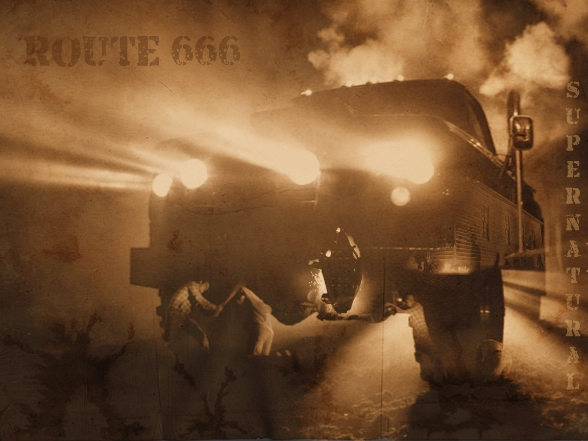

Even though Dodge had been making trucks since 1918. The first one to be called Ram wasn't built until 1981. A redesign of the D series for the 1972 model year introduced a more rounded look. This redesign, which lasted until 1980 with minor changes, included new features such as an independent front suspension and pocketed taillights (the distinctive reverse-on-top lights were recessed to .25 in (6.4 mm) to avoid damage in loading docks and confined spaces). Styling cues, such as the scalloped hood and rounded fenderwells, were similar to the rounded, smooth look of the 1971 Plymouth Satellite. These trucks were built with a considerable amount of galvanized steel to resist rust and corrosion, making them very durable.
Production: 1984–1998 Camshaft drive: Gear driven Crankshaft: Forged steel, 7 main bearings System capacity with filter: 3.5 US gal (13 L; 2.9 imp gal) Cooling system: 6 US gal (23 L; 5.0 imp gal) coolant System capacity incl heater: 6.5 US gal (25 L; 5.4 imp gal) coolant Power output: 160–230 hp (119–172 kW) at 2500 rpm Torque: 400 - 400–440 lb⋅ft (542–597 N⋅m) at 1600 rpm Compression ratio: 17.5:1
In the Supernatural episode "Route 666," the ghost of a deceased man haunts a town as a phantom D300.
For more information, Wiki
Or check out the Classic
Created by: Keeferr